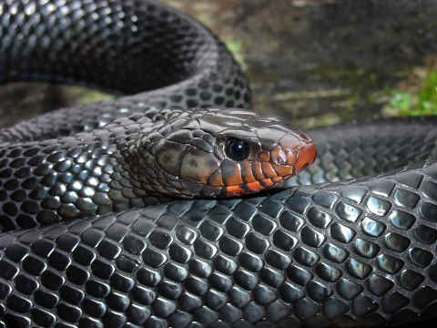
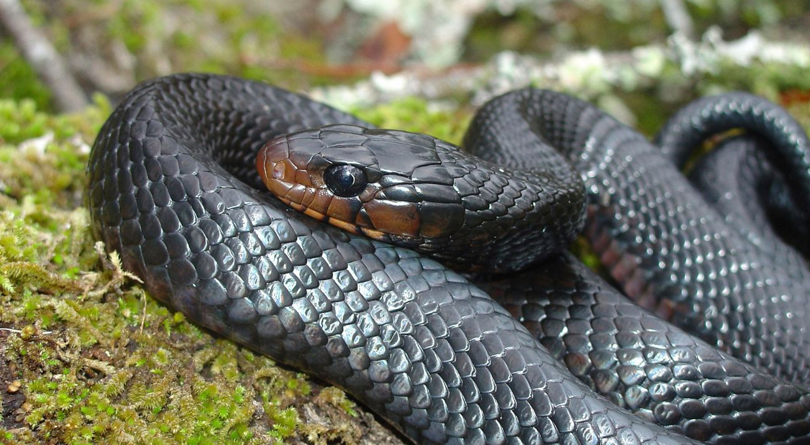
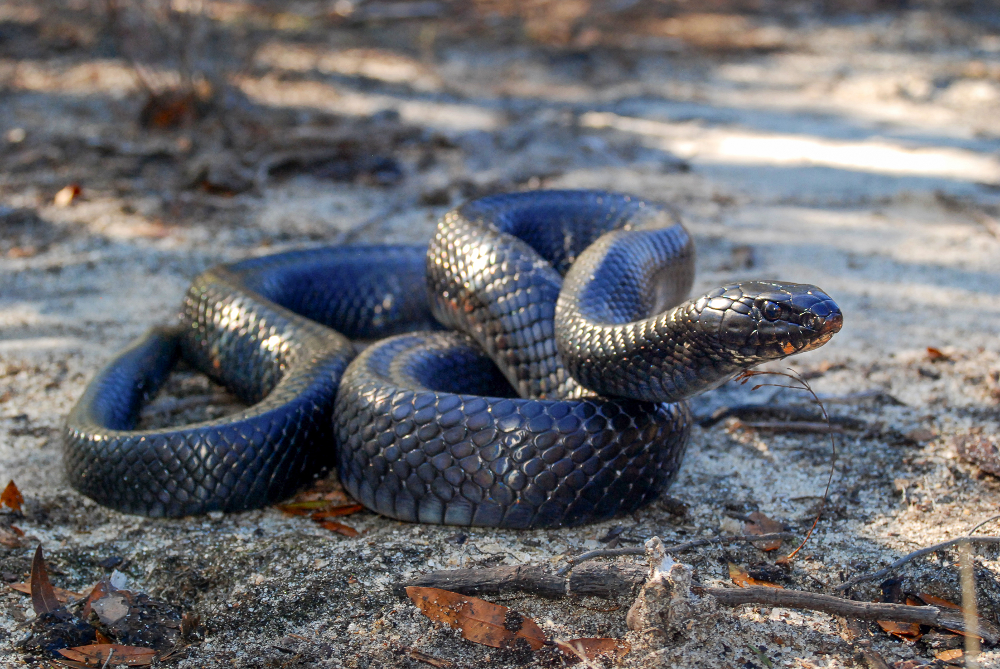

Description
They usually have a bluish black color and have a red accent around their chin, side of their head, and their throat. Most have smooth scales but adults can have some scales that have ridges.
Conservation
They are listed as threatened species under the endangered species act but listed as least concern by the IUCN. There has been a movement called the Indigo Release Program to help the population grow in the regions that they reside in.

Reproduction Patterns
Indigo snakes will start breeding form between november and april. The femails will lay around 4-12 eggs bi-yearly and the eggs will hatch in around 90 days. They will usually lay their eggs in Gopher Tortoise burrows.

Habitat
Flatwoods, hardwood forests, moist hammocks, and areas that surround cypress swamps in Peninsular Florida and southeastern Georgia.

Scientific Name: Drymarchon couperi Average Size: males commonly reach 7-9 feet in length, females are slightly smaller Average Lifespan: 8 to 12 years
Diet: small mammals, birds, toads, frogs, turtles and their eggs, lizards, and small alligators Clutch Size: 6-12 eggs